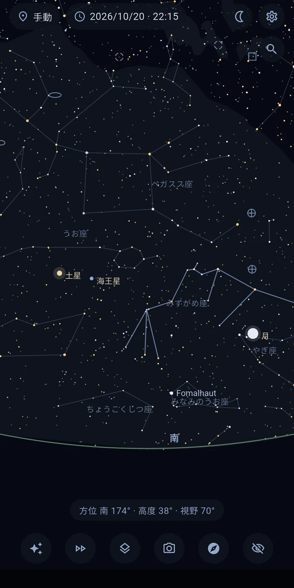
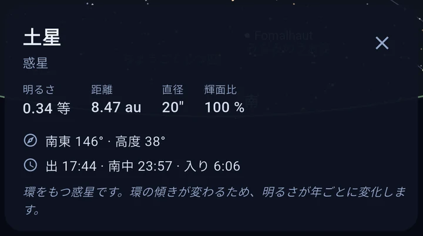
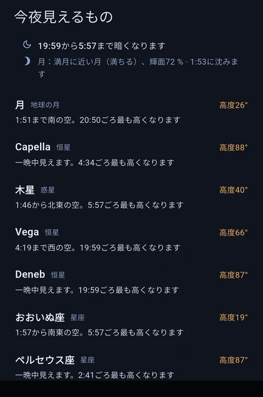
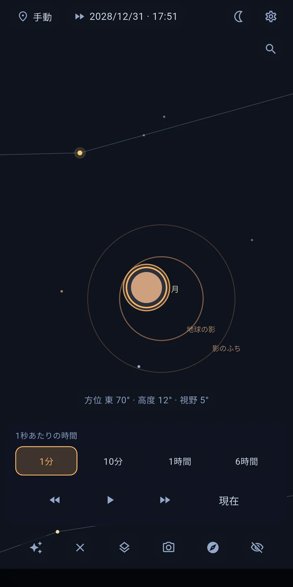

Astira – 星図
星座・惑星・月をその場で見分ける。インターネット不要。
端末を空に向けてください。Astira は、あなたが今見ている星空をそのまま表示します。恒星と星座、惑星、月、遠くの銀河を、あなたのいる場所と時刻に合わせて正確に計算します。インターネットは必要ありません。
空があなたの動きに合わせて動きます
ライブモードでは方位センサーが表示を操ります。端末を動かすと星図もいっしょに動き、磁気偏角も補正されます。指で動かして見たいときは、ドラッグとピンチでも操作できます。

タップして知る
天体をタップすると、画面を離れずに詳しく調べられます。固有名とカタログ名、距離、明るさ、スペクトル型、温度。明るい恒星の多くは半径と質量も表示します。あわせて、その場所での出・南中・入りの時刻もわかります。

さがしているものを見つける
恒星、惑星、星座、深宇宙天体を、名前でもカタログ番号でも探せます。M 31、NGC 224、アンドロメダは、すべて同じ天体に行き着きます。目当ての天体が画面の外にあるときは、矢印が向きと角度を教えてくれます。何を見ればいいか決まっていないときは「今夜の見どころ」をどうぞ。これからの夜でいちばん見ごたえのある天体を、やさしい言葉で、高度と観察できる時間帯とあわせて挙げます。予備知識がなくても天文の入り口になります。はじめて起動したときは、短い案内が操作をひととおり見せてくれます。

見られるもの
- 約8,900個の恒星 — 肉眼で見えるものすべて (6.5等まで)
- 太陽、月 (満ち欠けつき)、すべての惑星。見えるかどうかと薄明の状態もあわせて表示
- メシエ天体109個すべてと、明るい銀河・星雲・星団
- 切り替えられるレイヤー: 星座、天の川、太陽系、黄道、惑星の軌道 (前後30日)
- 現在地はGPSでも手入力でも設定でき、日時も自由に選べます — 明日の空を今日見られます
時間の早送り
早送りを使うと、星が空を横切っていくようすを、前にも後ろにもたどれます。天体が沈むところ、ひと晩の移り変わり、月の満ち欠けをたどれます。
日食と月食
Astira は、あなたのいる場所から見える日食・月食を計算します。始まる時刻と、どれくらい欠けるか。タップすれば、早送りでたどれます。

ぴったり合わせる
星図が少しずれていませんか。スマートフォンの方位磁針では珍しくありません。知っている星に向けてタップし、「ここに合わせる」を押すだけで直せます。勘に頼らず、星図があなたの空と重なります。
まわりの風景に重なる星空
カメラ映像を表示すると、星図が目の前の実際の景色 — 地平線、木、屋根 — に重なります。地図と現実を頭の中で重ね合わせるかわりに、探したい方向へ端末を向けるだけです。映像は表示するだけで、撮影も保存も送信もしません。
観測のために
- 濃い赤の夜間モードが目の暗順応を保ちます
- 観測しているあいだ、画面は消えません
- 色指数にもとづく実際に近い星の色と、明るさに応じた大きさ
- 表示する等級の上限を調整でき、距離は光年でもパーセクでも表示できます
完全にオフライン、そして安心
Astira にインターネットは必要ありません。計算 はすべて端末の中で行われます。このアプリはインターネットの権限を持たず、広告も表示せず、トラッキングもありません。現在地は端末の中で空を計算するためだけに使われます。街や電波から遠く離れた観測地でも問題なく使えます。
精度について
位置の計算は天文学の標準的な手法に従い、惑星の位置はJPLの基準値から1分角未満のずれに収まります。
データの出典
星表: HYGデータベース (CC BY-SA) · 深宇宙天体: OpenNGC (CC BY-SA) · 詳しくはアプリのクレジット画面をご覧ください。
ご注意: スマートフォンの方位磁針の精度は通常 ±5〜10° です。案内つきの調整と星による位置合わせを使えば、それでもどの天体も確実に見分けられます。